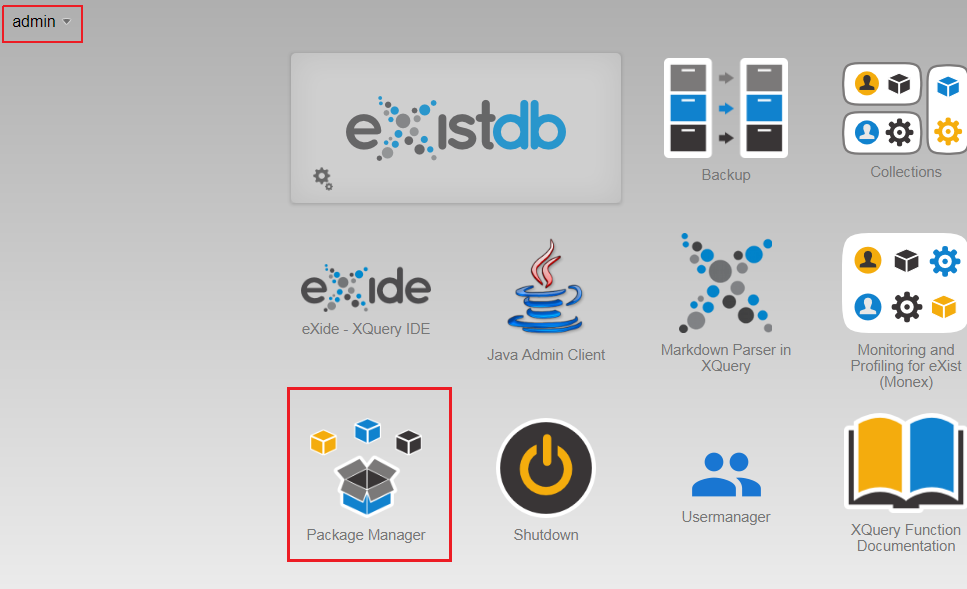
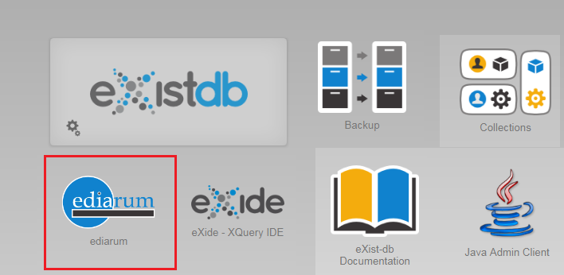

Über das Dashboard der eXist-db installieren Sie ediarum.DB mithilfe
xar-Datei. Danach enthält Ihre Datenbank einige grundlegende Funktionen und
Zugriffs-Einstellungen und Sie können die ediarum.DB App verwenden.
Melden Sie sich im Dashboard Ihrer eXist-db mit Admin-Rechten an.
Öffnen Sie die Package Manager App.

Klicken Sie auf den Button add a package, ziehen Sie die
gespeicherte Datei ediarum.db-〈version〉.xar in das Fenster
Upload Packages oder klicken Sie auf
Upload und wählen die xar-Datei über Ihr
Dateiexplorer aus und schließen Sie das Fenster Package
Manager.
Im Dashboard sehen Sie nun die ediarum.DB-App.

In Ihrer eXist-db wurde nun Folgendes eingerichtet:
Nutzer-Gruppen: website,
oxygen
Nutzer: exist-bot, oxygen-bot,
website-user, mit entsprechend lautenden
Passwörtern
Zugriffsrechte zu benötigten Verzeichnissen und Prozessen